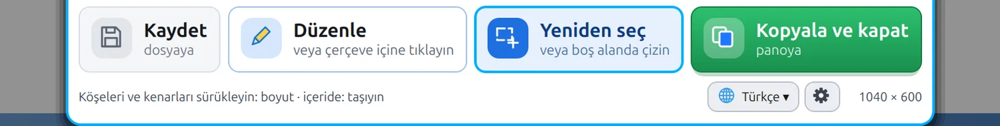
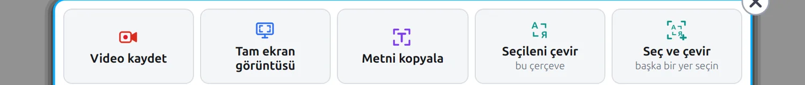
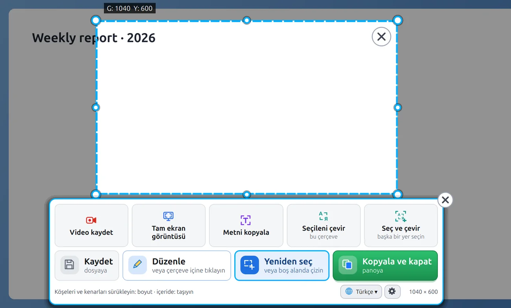
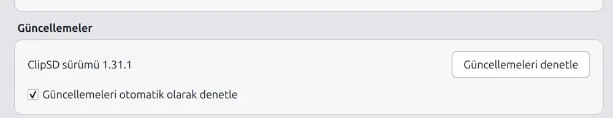
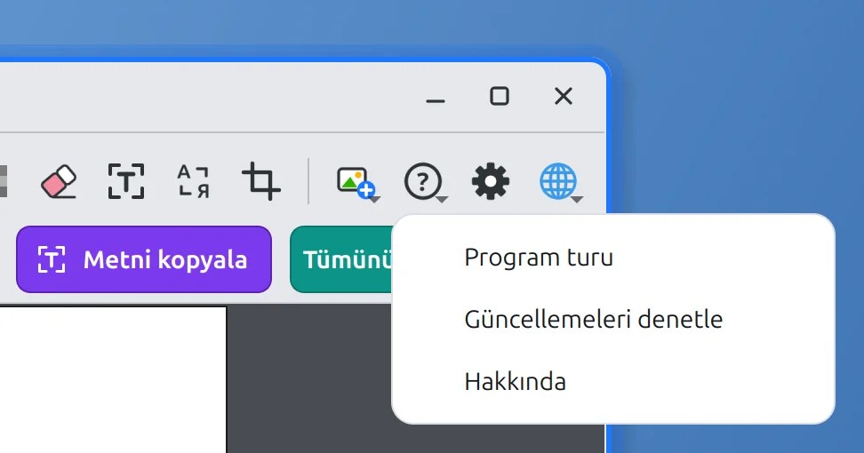
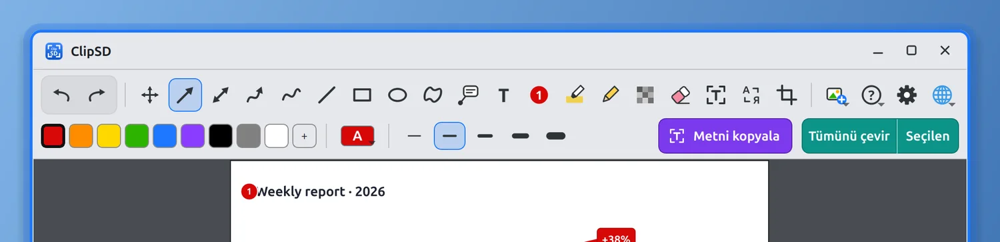
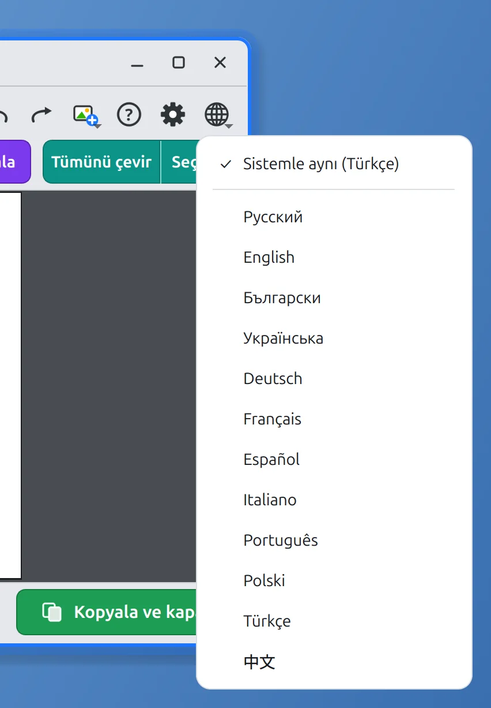
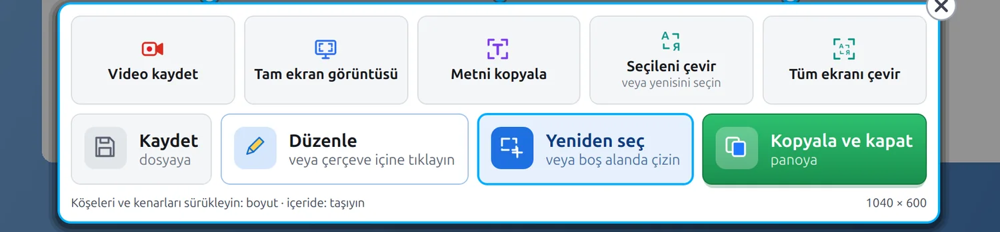
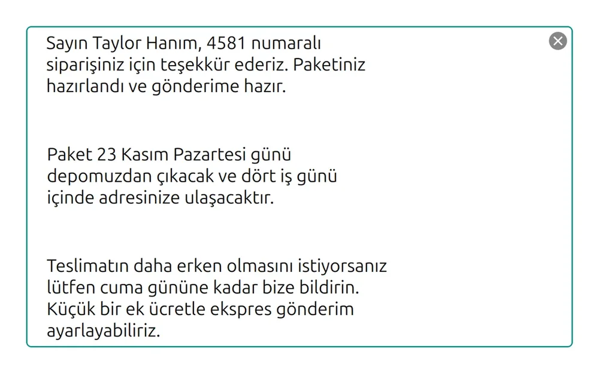
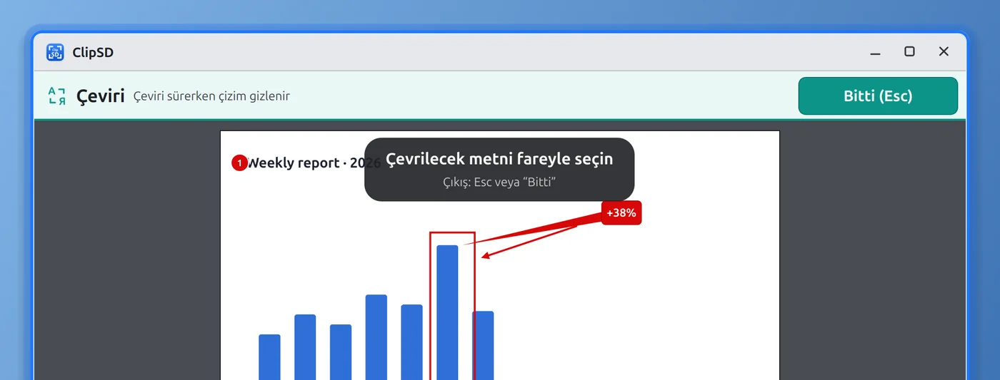

Sürüm geçmişi
Yeni sürümler ilk olarak ClipSD Telegram kanalında (yeni sekmede açılır) yayımlanır.
Sürüm 1.32.3
çıkış tarihi
- “Metni kopyala” düğmesinden hemen sonra düzenleyiciyi kapatırsanız ya da ilk ekran görüntüsünü açılır açılmaz kapatırsanız program artık kendiliğinden kapanmıyor.
- Güncellemeler. İndirme penceresinde Esc ya da çarpı yalnızca pencereyi gizler, indirme sürer; önceden program kapanıyordu. Hata penceresindeki “Yeniden dene”, bir indirme sürerken artık ikinci bir indirme başlatmıyor.
- Güncellemeler. Güncelleme için yeniden başlatmadan hemen önce kopyalanan ekran görüntüsü artık panodan kaybolmuyor: “Kopyala ve kapat” düğmesinden ya da indirme sırasında yapılan bir kopyalamadan sonra program, yapıştırabilmeniz için 2 dakikaya kadar bekler ve ancak sonra yeniden başlar.
- Güncellemeler. Hata penceresi ve “Yenilikler” artık seçim penceresinin ya da düzenleyicinin üstünde açılmıyor: işinizi bitirdikten bir dakika sonra görünürler. Program o zamana kadar kapanırsa hata penceresi bir sonraki başlatmada görünür.
- Güncellemeler. “Güncellemeleri denetle”, program tam o sırada güncellemeleri kendisi denetlerken de bir pencereyle yanıt verir. Güncelleme hata penceresi açıksa düğme onu öne getirir.
- Linux. Güncelleme kurulurken Alt+W artık güncellemeyi bozmuyor.
- Neredeyse aynı anda iki başlatma, örneğin simgeye çift tıklama, artık iki simgeli iki program kopyası açmıyor.
- Simgeye tıklamak her zaman seçimi açar: değerlendirme penceresi ya da güncelleme önerisi artık onun yerine açılmıyor.
- Ekran görüntüsü kısayolu başka bir program tarafından kullanılıyorsa, bunu bildiren mesaj artık kaybolmuyor (Windows ve GNOME dışındaki Linux): önceden kısayol hiçbir mesaj olmadan çalışmıyordu.
- Aynı saniyede kaydedilen iki ekran görüntüsü artık birbirinin üzerine yazılmıyor: ikinci dosyanın adına _2 eklenir.
- Parça parça çeviri. Kalan karakter sayacı, birkaç parça aynı anda çevrilirken artık şaşmıyor. Küçük bir parçadaki hata mesajı tamamen görünür. Dili tam çevirinin sonunda değiştirirseniz, metin bulunamadı mesajı artık hata olarak gösterilmiyor.
Sürüm 1.32.2
çıkış tarihi
- Parça parça çeviri. Çeviri penceresinin düğmeleri boş bir yere yerleşir ve çevrilmiş metni ya da komşu pencereleri kapatmaz. Yeni parça, zaten açık olan bir pencerenin üstüne gelmez. Düğmeler için yer yoksa pencerenin köşesinde bir çarpı kalır, düğmeler fareyle üzerine gelindiğinde görünür.
- Tüm ekranı çevirme. Sekme başlığı ve adres gibi kısa satırlar tek satırda kalır.
- “Metni kopyala” düğmesi. Orta boyutlu ekran görüntülerinde büyük düğme daha uzun süre görünür kalır: önce “Tümünü çevir” kaybolur.
Sürüm 1.32.1
çıkış tarihi
- Düzenleyicide yineleme. Ctrl+Y, geri alınan işlemi yeniden yineliyor: Windows'ta bu kısayol çalışmıyordu. Ctrl+Shift+Z de çalışır.
- ClipSD'yi değerlendirme. Gönderimden sonraki pencere, değerlendirme ulaştığında artık “Değerlendirme gönderiliyor…” yazısında kalmıyor. Değerlendirme sırasında Alt+W'ye basarsanız yazdığınız yorum kaybolmaz: değerlendirme penceresini bir sonraki açışınızda geri gelir.
- Acil güncelleme. “Acil ClipSD güncellemesi” penceresi bir ekran görüntüsü (Alt+W) nedeniyle kapandıysa, ekran görüntüsünü bitirdiğinizde yeniden görünür, bir gün sonra değil.
- Seçili nesnenin rengi. Seçili nesnenin rengi ve kalınlığı yalnızca o nesnede değişir. Paletin altında bir ipucu belirir: “Bu renkle devam et” düğmesi yeni rengi sonraki çizgiler için de korur.
- Kendi renkleriniz. “+” ile seçilen renkler, “+” düğmesinin önünde örnekler olarak hatırlanır. En fazla üç örnek tutulur, sağ tık bir örneği kaldırır.
- Vurgulayıcı ve kalem. Bir çizgiye önceki çizginin kenarına bitişik başlarsanız yeni bir çizgi çizilir, önceki çizgi yerinden oynamaz.
Sürüm 1.32.0
çıkış tarihi
- Yeni düzenleyici. Araçlar gruplara ayrıldı (oklar ve çizgiler, şekiller, yazılar, çizim ve diğerleri). “Tüm araçlar” düğmesi hepsini kısayol tuşlarıyla birlikte tek seferde gösterir. Dar bir ekran görüntüsünde düzenleyici penceresi de dar olur: gruplar katlanır, tüm araçlar yine elinizin altındadır.
- Sağ tık menüsü. Seçili nesnenin menüsü artık çerçevesini ve tutamaçlarını kapatmıyor: nesnenin yanında açılıyor.
- Bildirim zili. Düzenleyicide bir zil var, “Bildirimler”: “Güncelle” düğmesiyle yeni sürüm, kurulu sürümdeki yenilikler ve programın kısa mesajları. Yeni sürümü önce zil haber verir; güncellemeyi öneren pencere, o zamana kadar kendiniz güncellemediyseniz daha sonra açılır.
- Seçim penceresi turu. İlk ekran görüntüsünde pencere, paneldeki düğmelerin ne yaptığını adım adım gösterir. Tekrar görmek için saatin yanındaki simgenin menüsünü açın: “Seçim penceresi turu”.
- Dil adlarının yanında artık bayraklar var. Ayarlarda seçilen dil, pencereyi kapatmadan hemen değişir.
- Ayarlar bölümlere ayrıldı. Solda bir liste (Genel, Ekran görüntüsü, Düzenleyici, Metin ve çeviri, Güncellemeler, Hakkında), üstünde arama. Pencere hangi bölümün açık olduğunu hatırlar.
- ClipSD'yi değerlendirme. ClipSD'yi 1'den 5'e kadar yıldızla değerlendirip yorum bırakabilirsiniz: simge menüsü ya da düzenleyicideki “?”, “ClipSD'yi değerlendir”. Program ara sıra değerlendirmeyi kendisi önerir, ancak yalnızca ekran görüntüsü almadığınız ve düzenleyicide çalışmadığınız zamanlarda.
- Ölçeklendirilmiş ekranlarda daha net görüntüler. Ölçeklendirilmiş ekranlarda (%125, %150, %200) ekran görüntüleri daha net: düzenleyici onları bulanıklaştırmadan gösterir. Linux'ta tarayıcılar ve belgeler onları esnetmeden özgün boyutlarında yapıştırır. Ayarlarda, “Ekran görüntüsü” bölümünde “Ekran görüntüsü boyutu”nu seçebilirsiniz: tam çözünürlük ya da ekrandaki gibi.
- Pencerelerde daha sakin görünüm. Daha sakin bir görünüm ve daha okunaklı metin: yazılar ve düğmeler daha belirgin, ana yeşil düğme daha koyu ve düzenleyici penceresinin çerçevesi varsayılan olarak ince.
- “Hakkında” penceresi. “Hakkında” penceresinde artık ClipSD adı ve simgesinin kullanım koşulları ve Telegram'daki haberlere bir bağlantı var.
Sürüm 1.31.2
çıkış tarihi
- Linux: güncelleme yeni sistemlerde (örneğin Ubuntu 26.04) yine kendiliğinden kuruluyor. Önceden indiriliyor ama kurulmuyordu.
- Linux: yeni sistemlerde metin tanıma, bağlantılar ve otomatik başlatma yeniden çalışıyor.
- Bir güncelleme kurulamazsa “Yeniden dene” ve “Hata raporu” düğmeleri olan bir pencere açılır. Raporda kullanıcı adı veya kişisel klasör yolları yoktur.
- Güncellemeden sonra yenilikler penceresi “Güncelleme kuruldu” satırıyla başlar.
Sürüm 1.31.1
çıkış tarihi
- Alan seçme penceresinde dili hemen değiştirebilir ve ayarları açabilirsiniz: panelin altında, boyutun solunda, dil adıyla bir küre ve bir dişli var.

- Çeviri iki düğmeye ayrıldı: “Seçileni çevir” zaten duran çerçeveyi çevirir, “Seç ve çevir” başka bir yeri çizmenizi sağlar. Tüm ekranı çevirme, çeviri modu satırına “Tüm ekran” düğmesi olarak taşındı.

- Seçim penceresindeki panel yaklaşık %15 daha kompakt ve çerçevenin üstüne değil yanına yerleşir: altına, üstüne, sağına veya soluna. Dışarıda yer yoksa çerçevenin içine girer.

- Ayarlarda yeni bir “Güncellemeler” bölümü var: sürüm, “Güncellemeleri denetle” düğmesi ve otomatik denetim kutusu. Düzenleyicideki “?” düğmesi artık bir menü açar: “Program turu”, “Güncellemeleri denetle” ve “Hakkında”.


- Düzenleyicide “Geri al” ve “Yinele” satırın başında, ayrı bir zeminde durur. Araçlar varsayılan olarak şöyle sıralanır: taşıma, yan yana oklar, sonra şekiller, sonra gerisi. Kendi belirlediğiniz sıra değişmez.

- Küre simgesi her yerde açık mavi, bulması daha kolay.
- Linux: ilk kurulum düzeltildi, önceden yarıda sessizce durabiliyordu.


Sürüm 1.31.0
çıkış tarihi
- ClipSD artık 12 dilde: Rusça, İngilizce, Bulgarca, Ukraynaca, Almanca, Fransızca, İspanyolca, İtalyanca, Portekizce, Lehçe, Türkçe ve Çince. Dil yeniden başlatmadan hemen değişir: saatin yanındaki simge menüsünden, düzenleyicideki küreden, tanıtımın ilk adımından veya ayarlardan.

- Seçim penceresinde yeni bir panel var: üstte tam ekran görüntüsü, video kaydı, metin kopyalama ve çeviri; altta “Düzenle”, “Kaydet” ve “Kopyala ve kapat”.

- Parça parça çeviri: bir alanın çevresini çizin, çeviri metnin üzerine yerleşir; ardından başka bir alanın çevresini çizin, o da çevrilir. Esc bu modu sonlandırır.

- Düzenleyicinin “Metin kopyalama”, “Kırpma” ve “Çeviri” modları, üstte büyük bir çıkış düğmesinin bulunduğu bir çubukla gösterilir; Esc önceki araca döner.

- ClipSD kendini günceller. Günde bir kez yeni sürüm olup olmadığını denetler ve “Güncelle”, “Daha sonra” veya “Bu sürümü atla” seçeneklerini sunar. Hemen denetlemek için simge menüsünden “Güncellemeleri denetle”yi seçin. Güncelleme dijital imzayla doğrulanır; yeni sürüm başlamazsa önceki sürüm geri yüklenir.